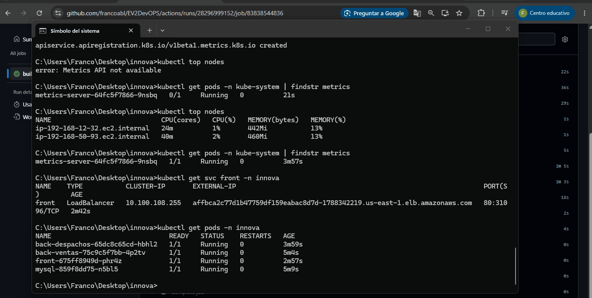
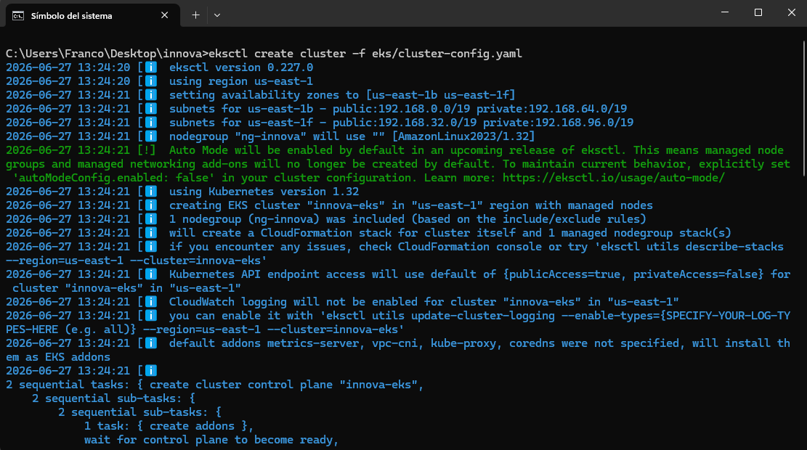
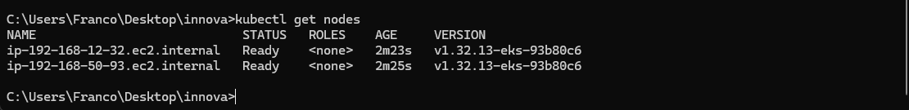
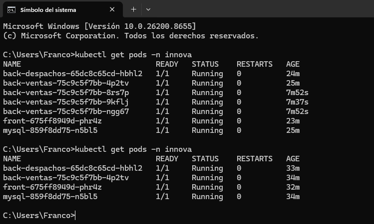
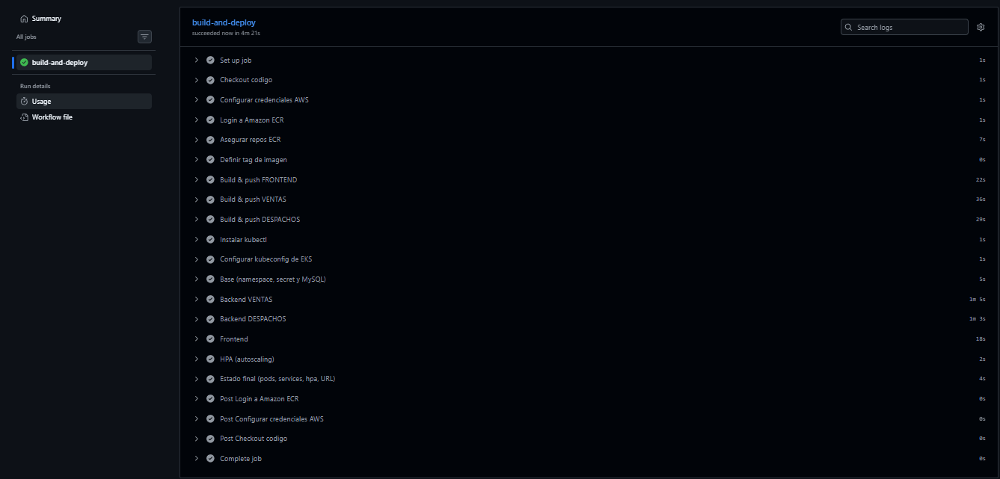
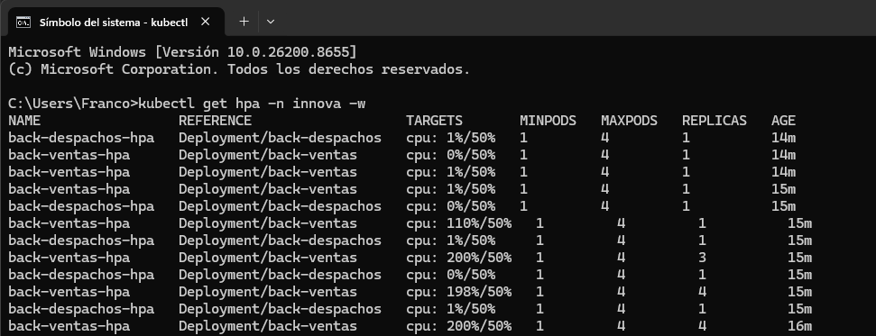
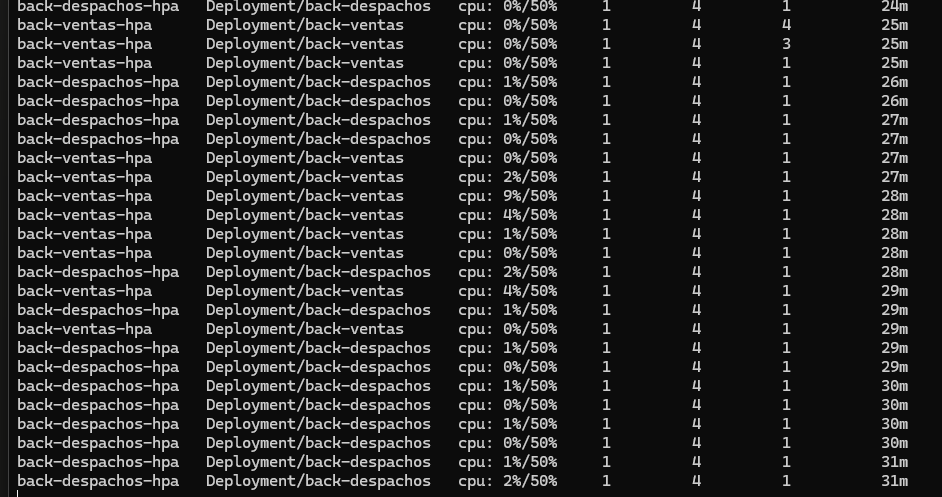

Despliegue, automatización y escalado de la aplicación de Innovatech sobre Kubernetes.
Tras contenerizar la aplicación (EP2), el objetivo de EP3 es llevarla a un entorno orquestado, escalable y automatizable en producción.



Cada componente corre como un Deployment, con su imagen versionada y sus credenciales protegidas.

Cada push a main construye, publica y despliega automáticamente con kubectl.



Comunicación Frontend → Backend → MySQL operativa de punta a punta sobre el clúster.
CI/CD funcional y autoscaling demostrado con evidencia sobre Amazon EKS. Innovatech, lista para crecer en producción.